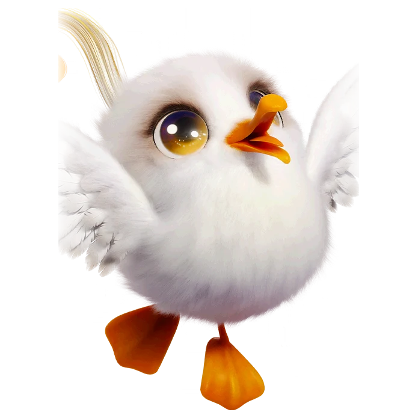

รายชื่อ Aniimo › #007

จิ๊บจิ๊บ (Chirpi)
#007ธาตุลมSupport Lumin StageTier B
พวกมันมักบินวนอยู่ในระดับต่ำ คอยสังเกตทุกความเคลื่อนไหวบนชายหาดและก่อเรื่องวุ่นวายอยู่เป็นประจำ
ดูรายละเอียดเต็ม ร่างพิเศษ และร่างเปล่งประกายค่าสถานะพื้นฐาน
| HP | 97 |
|---|---|
| ATK | 83 |
| P.DEF | 67 |
| M.DEF | 69 |
| REGEN | 93 |
| BREAK | 43 |
สกิล
| โจมตีปกติ | ATK ลม ใช้พลังลมโจมตีเป้าหมายจากระยะไกล |
| สกิล 1 | Tornado ลม ปล่อยพายุหมุนอากาศในตำแหน่งเป้าหมาย สร้างดสเมจและดูดศัตรูเข้าสู่ศูนย์กลาง |
| สกิล 2 | March ลม บรรเลงดนตรีและได้รับบัฟชุดบทเพลง: [เพลงมาร์ช] ฟื้นฟู HP สูงสุด 0.8% ทุกวินาที เป็นเวลา 20 วินาที เมื่อมีบัฟชุดบทเพลงครบ 3 ชนิด เอฟเฟกต์ทั้งหมดของบัฟเหล่านั้นจะเพิ่มขึ้น 30% |
| สกิล 3 | Tornado Wind Orb ลม ปล่อยลูกแก้วลมทอร์นาโดที่จะระเบิดเมื่อชนเป้าหมายและสร้างพายุทอร์นาโดพุ่งไปด้านหน้า |
สายวิวัฒนาการ
- จิ๊บจิ๊บ → จิ๊บแตรยาว (แอนีโมเลเวล 18, ศักยภาพ HP จากที่ได้รับเท่ากับ 6 หรือมากกว่า, เรียนรู้พรสวรรค์ติดตัว [แตรวิเศษ])
- จิ๊บจิ๊บ → จิ๊บแตรน้อย (แอนีโมเลเวล 18)
- จิ๊บจิ๊บ → จิ๊บแตรใหญ่ (แอนีโมเลเวล 18, ศักยภาพทำลายจากที่ได้รับเท่ากับ 6 หรือมากกว่า, เอาชนะจิ๊บแตรใหญ่อัลฟา)
จุดเกิด
- Nimbus Fields Lv. 5–15
- The Argent Strait Lv. 28–32
- Beast Fang Ridge Lv. 30–35
- Blitzwood Lv. 40–45
Held Item ที่แนะนำ
- Spirited Feather แอนีโมที่ติดตั้งจะได้รับพลังฟื้นฟูเพิ่ม 0.7 หน่วยต่อเลเวล
- Auspicious Bell เมื่อใช้สกิล มีโอกาส 20% ที่จะได้รับ 5 EP
งานใน Homeland
งานธาตุลม Lv.1